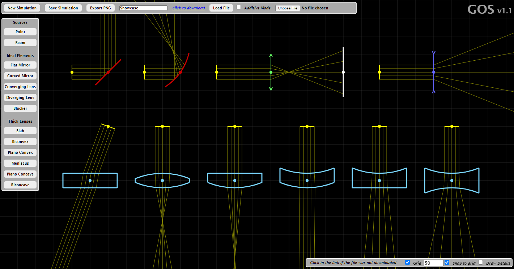

GOS
Geometric Optic Simulator
GOS (Geometric Optics Simulator) provides a simple but powerfull framework to perform little experiments based on the laws os what is known as "geometric optics".
GOS is fully developed using Javascript and runs in your browser so it doesn't require downloading any executable or install anything.
If you want to report a bug or suggests new features you can drop me an email:
geooptsim@gmail.com

GOS-Workspace
If you want to report a bug or suggests new features you can drop me an email:
GOS-Workspace
Tips
- All angular magnitudes are in degrees. All length magnitudes are in the same units, which can be whatever you want (m, cm, mm, etc). The scale doesn't affect the solution.
- You can enable/disable a background grid and snap elements to grid in the lower right corner.
- After selecting an element, you can delete it pressing X or clone it pressing C.
- With an element selected, you can use the mouse wheel to rotate the element.
- In the top bar you can save your results and download the file.
- You can load previous results, first select the file you want to upload and then click on "Load File".
- When loading a previous result, if the "Additive Mode" is enabled, the elements will be added the current simulation.
- You can also download your simulation as a PNG, to do so click on the "Export PNG" button.
- Thick Lenses are expensive and you might experience some delays. If that happens, try to reduce the number of rays in the sources.
List of features currently supported (v1.2):
- Two different light sources with custom number of rays (point light and colimated beam)
- Ideal thin lenses (converging and diverging)
- Flat and curved (spherical) mirrors
- Higly customizable thick lenses with all possible combinations of flat/convex/concave surfaces.
- Rule and portractor to make measurements
- Save/Load your simulation results.
- Export simulation results as imagenes (png)
geooptsim@gmail.com